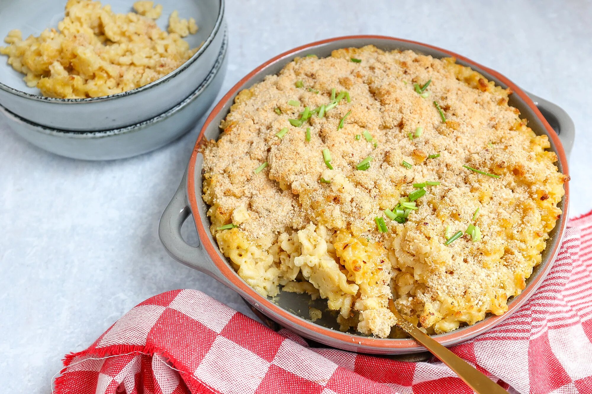

Pasta met broccoli en roomsaus

Ingredienten
- 400 gr macaroni
- 50 gr boter
- 50 gr bloem
- 500 gr melk
- 100 gr cheddar
- 1 tl mosterd
- snufje nootmuskaat
- paneermeel
- snufje zwarte peper
Bereiding
- Verwarm de oven voor op 200 graden.
- Kook de macaroni volgens de instructies op het pak.
- Smelt de boter in een steelpan. Voeg de bloem toe en meng door elkaar. Laat dit 1 minuut bakken en voeg dan beetje voor beetje de melk toe. Blijf ondertussen goed roeren met een garde totdat je een romige saus hebt.
- Voeg daarna de geraspte kaas toe. Als de kaas gesmolten is, zet je het vuur uit. Voeg ook de mosterd en nootmuskaat toe.
- Meng de gekookte pasta door de kaassaus en schep alles in een ovenschaal. Voeg naar smaak nog een snufje zout en peper toe. Bedek de ovenschotel met paneermeel en zet de mac & cheese 20 minuten in de oven.